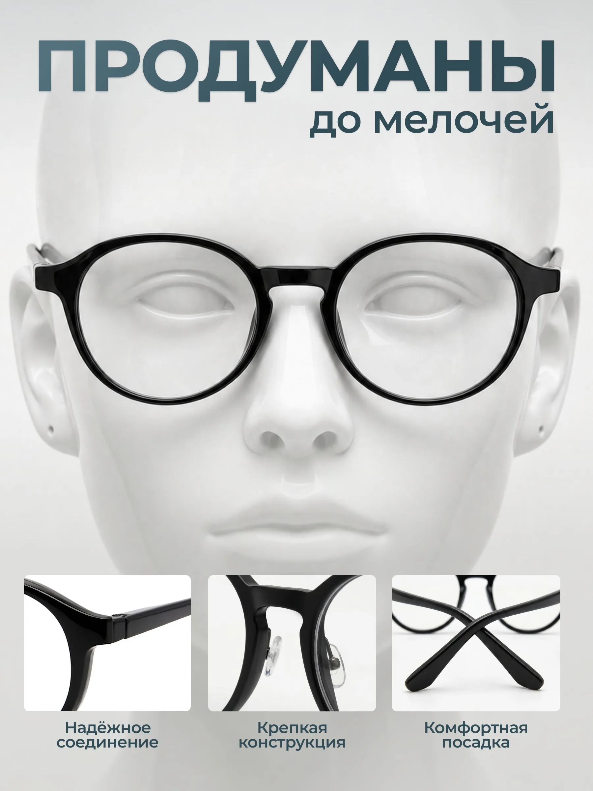
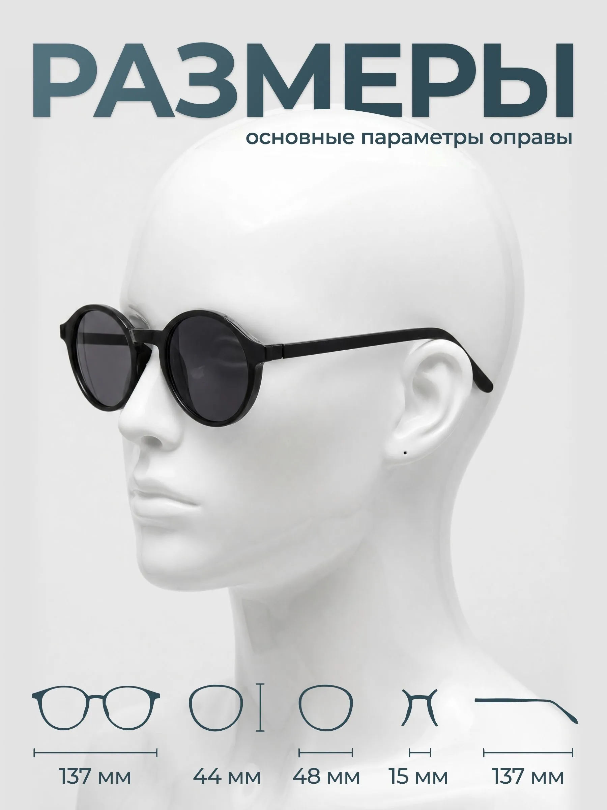
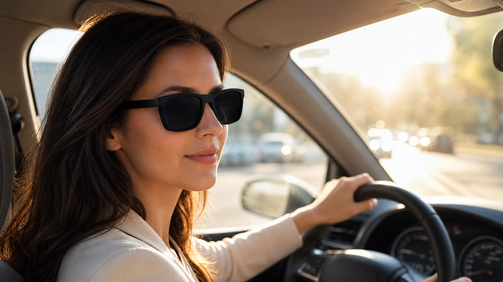
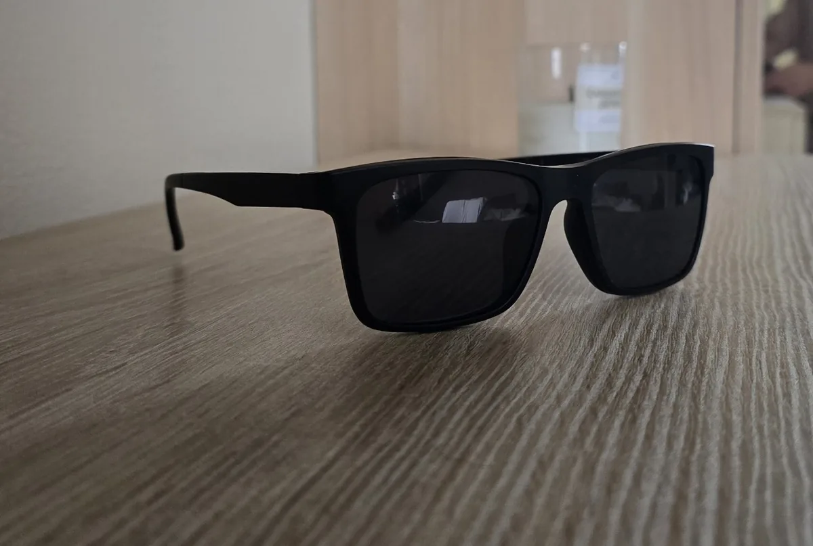

Очки по вашему рецепту
с магнитной насадкой
Соберём очки с обычными линзами по вашему рецепту. Диоптрии справа и слева могут отличаться — это входит в цену. В помещении носите очки для зрения, на солнце добавляете магнитную насадку.
Нужен рецепт на очки. Есть вопросы о заказе? Напишите в Telegram.
- 2 990 ₽ за комплект
- Смена за 1 секунду
- Разные диоптрии на два глаза
- Обычные сферические линзы
На солнце хочется
и видеть, и не щуриться
Обычные тёмные очки без диоптрий не дают привычной коррекции зрения. А в прозрачных очках на яркой улице приходится щуриться.
Можно заказать отдельную солнцезащитную пару по рецепту. Но её нужно носить с собой и менять очки каждый раз, когда заходите в помещение.
С W OPTICS ваша пара остаётся на вас: на улице добавляете насадку, дома или в магазине снимаете её. Диоптрии никуда не исчезают.
Решение — очки 2 в 1
с магнитной насадкой

Линзы под каждый глаз
Собираем комплект с обычными сферическими линзами по рецепту. Для правого и левого глаза можно указать разные диоптрии.
Ваша повседневная пара для дома, работы и прогулок. Доступность нужных линз и соответствие рецепту и посадку уточним перед оплатой.

Насадка садится как родная
Повторяет форму оправы и плотно прилегает к ней. В сборе очки выглядят как единая пара с тёмными линзами.
Два магнитных крепления соединяют насадку с оправой. Круглые магниты видны на краях насадки; ответные крепления скрыты в оправе. Снять её можно одним движением.
Ещё один вариант
Овальная оправа
Очки должны нравиться вам и удобно сидеть. Можно рассмотреть другую модель: проверим доступность линз под каждый глаз и возможность собрать пару по вашему рецепту.
В помещении
На улице
AI-визуализация образа по фотографиям оправы. Не фото покупателя; фактическую посадку проверяем индивидуально.
Фото оправы и размеры поставщика


Размеры, комплектацию, стоимость и срок согласуем до оплаты.
Практичная пара
за 2 990 ₽
Линзы уже в цене
За 2 990 ₽ получаете оправу, обычные сферические линзы и магнитную насадку. Разные диоптрии на два глаза не требуют доплаты.
Меняете насадку, а не очки
Из дома на улицу, из машины в магазин — одна пара остаётся на вас. С собой достаточно взять компактную насадку.
Можно взять второй комплект
Одну пару носить каждый день, другую держать для машины. В обеих — линзы с вашими диоптриями.
Как заказать очки по вашему рецепту
Заказываете основу
Присылаете рецепт. Проверяем наличие нужных линз и возможность собрать комплект с вашими параметрами.
Получаете комплект
Очки для зрения + магнитная солнцезащитная насадка в стильном чехле.
Меняем за 1 секунду
На солнце — крепите насадку. В помещении — снимаете. Магниты делают все сами.
Одна пара очков на все случаи: улица, спорт, дорога
Дома, на прогулке и по дороге в магазин — ваша коррекция зрения остаётся в основных линзах. Затемнённую насадку добавляете по ситуации.

День на велосипеде
Перед прогулкой на велосипеде добавьте насадку, если нужно затемнение. Проверьте посадку оправы и крепление до начала движения.

Вечер в городе
Вечером снимаете затемнение. На вас остаются обычные очки с линзами по рецепту.

Пробежка в солнечный день
Для солнечной прогулки — с насадкой. Перед активным движением проверьте посадку: комплект не заменяет защитные спортивные очки.

Пробежка в пасмурный день
Нет солнца — насадка не нужна. Очки с диоптриями работают в любую погоду.
Днём — от солнца,
в помещении — без насадки
В помещении вы носите их как обычные очки с диоптриями. Выйдя на улицу — ставите магнитную насадку одним движением, и те же очки становятся солнцезащитными.

Мужчина — дома
Прозрачные линзы с вашим рецептом: работа за ноутбуком, офис, дом. Лёгкая оправа на весь день.

Мужчина — на улице
Те же очки с затемнённой насадкой. Коррекция зрения остаётся в основных линзах.

Женщина — дома
Обычные очки для зрения: работа, дом и повседневные дела. Посадку можно уточнить перед покупкой.

Женщина — на улице
Та же оправа с тёмной насадкой: прогулка, поездка, яркое солнце. Вторая пара не нужна.
Не нужно носить с собой вторую пару: насадка крепится на магнитах за секунду и так же быстро снимается.
Из машины — в магазин:
одна пара на весь день
За рулём — с насадкой от солнца. Вышли из машины — сняли её одним движением и пошли за покупками в тех же очках, уже с прозрачными линзами.

За рулём — с насадкой
Установите насадку перед солнечной поездкой, пока машина стоит. Припарковались у магазина — сняли её и убрали в футляр. Очки для зрения остаются на вас.
В магазине — уже обычные очки
Те же очки, но с прозрачными линзами: ценники, витрины и список покупок видно чётко. Затемнение в помещении не мешает, вторую пару носить с собой не нужно.
Живые фото комплекта: оправа, насадка, чехол
Рассмотрите оправу и насадку на фотографиях. На сайте также есть иллюстрации повседневных сценариев. Дополнительные фото и видео можно запросить перед заказом.

Один комплект — два режима
Оправа для зрения и насадка лежат рядом: крепится и снимается за секунду.

Комплект в сборе
Очки с установленной насадкой — режим для улицы и вождения.

Насадка сидит вплотную
Две точки крепления удерживают насадку вплотную к оправе.

Вид спереди
Затемнённая насадка повторяет форму оправы и выглядит как её часть.
Мы в Санкт-Петербурге: доставим по городу и области, посмотреть и примерить можно при встрече.
Кому подойдут очки W OPTICS
Ниже — ситуации, в которых комплект 2 в 1 экономит деньги и нервы. Отзывы покупателей публикуем по мере появления.
Для солнечных поездок: затемнение добавляется к очкам с вашими диоптриями. Перед входом в магазин насадку снимаете.
Для дома и работы: обычные прозрачные линзы по рецепту. На солнечной улице добавляете насадку.
Активным людям — на солнце крепите насадку, в помещении снимаете. Одна пара вместо двух.
Всем, кто носит очки каждый день — практичное решение на каждый день, для мужчин и женщин.
Ответы на вопросы про очки с магнитной насадкой
Почему нам можно заказать
Показываем фотографии комплекта и иллюстрации использования. Перед заказом запросите дополнительные фото или видео в Telegram.
Обычные сферические линзы по вашему рецепту. Разные диоптрии для правого и левого глаза входят в цену.
Если что-то не так с оправой или насадкой — заменим.
Мы в СПб: можно примерить при встрече и забрать лично. По России — СДЭК и Почта.
Оплату согласуем до начала сборки — никаких скрытых доплат.
Пишите в Telegram: пришлите фото рецепта — проверим, подскажем по линзам и срокам.
Комплект W OPTICS — 2 990 ₽
Оправа с линзами по рецепту + магнитная насадка
- Линзы по вашему рецепту
- Магнитная насадка
- Обычные линзы с вашими диоптриями
- Доставка по СПб и России
Оплата — после подтверждения рецепта и срока. Есть вопросы о рецепте или заказе? Напишите в Telegram.